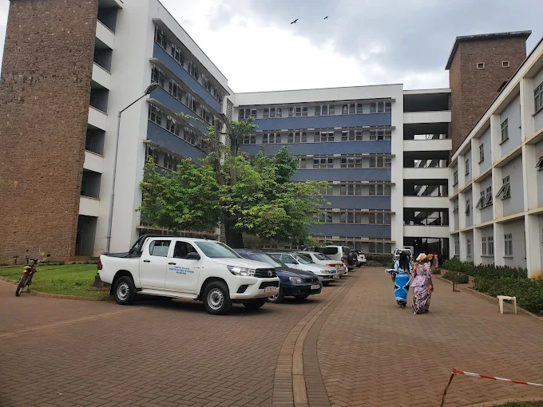
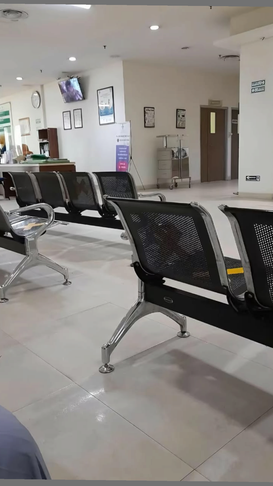
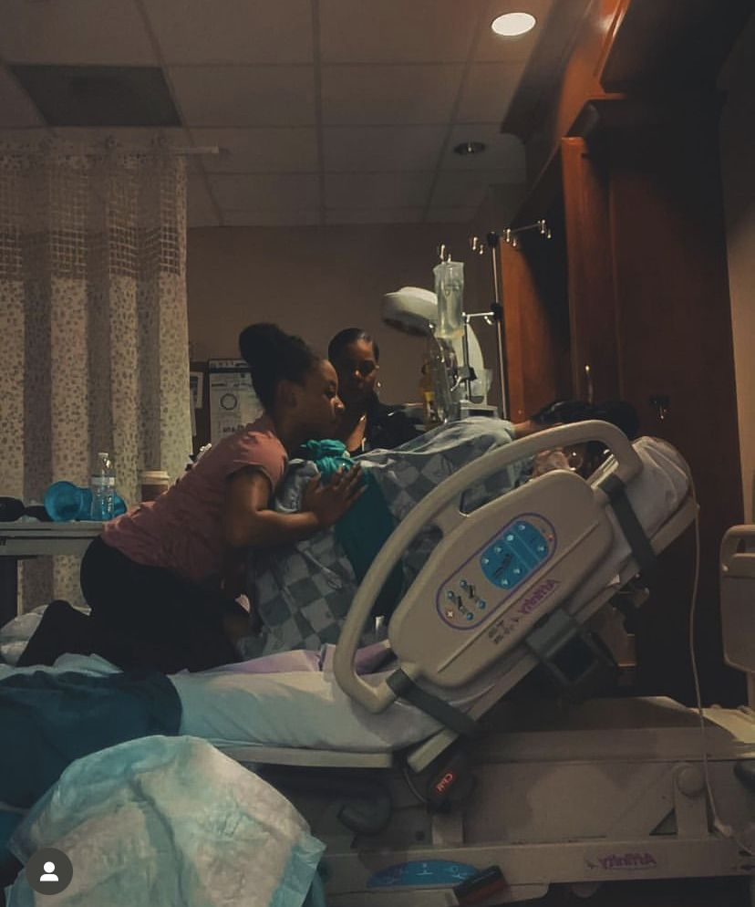
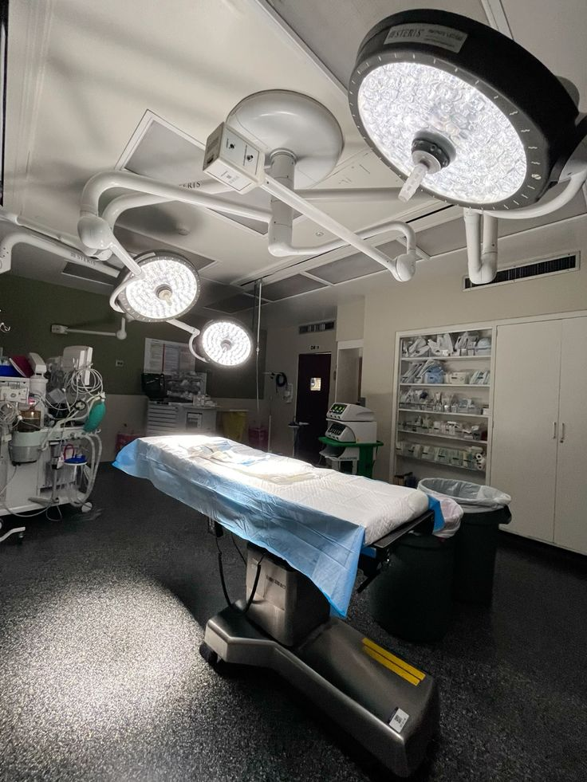

Our Medical Services
From emergency care to specialist outpatient clinics, Mulago provides a comprehensive range of services to meet the diverse health needs of Ugandans.
Comprehensive Care Under One Roof
Mulago National Referral Hospital operates over 35 clinical departments and specialist units. Below are the five major departments serving patients every day.
Emergency and Casualty
Our Emergency and Casualty Department operates 24 hours a day, 7 days a week. It is the first point of contact for patients with acute, life-threatening conditions, equipped with resuscitation bays, trauma rooms, and a triage system to prioritise care based on clinical urgency.
The department handles road traffic accidents, burns, poisoning, severe infections, cardiac emergencies, and obstetric emergencies, among many other conditions.
- 24-hour triage and resuscitation
- Trauma and accident management
- Acute medical and surgical emergencies
- Paediatric emergency services
- Obstetric emergency management
- Poison and overdose treatment

Outpatient Department (OPD)
The Outpatient Department is the largest point of contact between the hospital and the public. It hosts general medical, surgical, and specialist outpatient clinics, handling hundreds of patients daily across multiple consultation rooms.
Services include initial consultation, specialist review, prescription writing, investigation requests, and follow-up care without the need for hospital admission.
- General medical and surgical consultations
- Specialist outpatient clinics across 20 specialties
- Chronic disease management (diabetes, hypertension, asthma)
- HIV/AIDS care and antiretroviral therapy clinic
- Mental health outpatient clinic
- Physiotherapy and rehabilitation
OPD Hours: Monday to Friday, 8:00 AM to 5:00 PM

Paediatrics and Child Health
The Department of Paediatrics provides comprehensive medical care for children from birth through to 18 years of age. Our team includes consultants, registrars, and nurses with specialist training in child health.
The department includes a general children's ward, a neonatal intensive care unit (NICU), a malnutrition rehabilitation unit, and specialist paediatric outpatient clinics.
- Neonatal Intensive Care Unit (NICU)
- General paediatric inpatient ward
- Paediatric emergency and acute care
- Childhood malnutrition management
- Paediatric oncology services
- Immunisation and child wellness clinics

Maternity and Obstetrics
Mulago's Maternity Unit is one of the busiest in Africa, delivering thousands of babies every year. The unit provides a full spectrum of maternal healthcare including antenatal care, labour and delivery, caesarean section, postnatal care, and management of obstetric emergencies.
High-risk pregnancies, including those complicated by pre-eclampsia, multiple gestations, and maternal illness, receive specialist attention from our consultant obstetricians and midwives.
- Antenatal care clinics
- Normal and instrumental deliveries
- Caesarean section theatre
- High-risk pregnancy management
- Postnatal care and breastfeeding support
- Family planning services
- Fistula repair and gynaecological surgery

Surgical Services
The Department of Surgery provides a wide range of elective and emergency surgical procedures. Our operating theatres are equipped to handle both routine and complex operations, and Mulago is the only public facility in Uganda offering this full breadth of surgical sub-specialties.
Sub-specialities include orthopaedic and trauma surgery, cardiothoracic surgery, neurosurgery, urology, and plastic and reconstructive surgery.
- General and abdominal surgery
- Orthopaedic and trauma surgery
- Neurosurgery
- Cardiothoracic surgery
- Urology and renal surgery
- Plastic and reconstructive surgery
- Ear, Nose and Throat (ENT) surgery
- Ophthalmology and eye surgery

Photo: Operating Theatre and Surgical TeamAdditional Specialist Services
In addition to our five core departments, Mulago operates a wide range of specialist units to serve diverse patient needs.
Internal Medicine
Diagnosis and non-surgical management of complex conditions including cardiovascular, respiratory, renal, and endocrine diseases.
Radiology and Imaging
X-ray, ultrasound, CT scanning, and MRI services to support diagnosis across all clinical departments.
Laboratory Services
A fully equipped clinical laboratory offering haematology, biochemistry, microbiology, and pathology investigations.
Psychiatry and Mental Health
Inpatient and outpatient mental health services including assessment, psychotherapy, and medication management.
Intensive Care Unit (ICU)
Critical care for patients requiring close monitoring and life support following major surgery or critical illness.
Ophthalmology
Eye care services including cataract surgery, glaucoma treatment, and low-vision rehabilitation services.
Blood Bank and Transfusion
Safe blood collection, screening, and transfusion services to support surgical and medical patients.
Oncology
Cancer diagnosis, chemotherapy, radiotherapy referral, and palliative care for adult and paediatric patients.
Pharmacy
A fully stocked dispensary supplying essential medicines and providing medication counselling to inpatients and outpatients.
How to Access Our Services
Walk In
Visit the Outpatient Department directly. Arrive early as queues fill from 7:30 AM on weekdays.
Call Ahead
Phone our main line to enquire about specialist clinic days and availability before visiting.
Referral Letter
Patients referred from other facilities should bring a referral letter from their treating health worker.
Emergency Walk-In
For emergencies, go directly to the Casualty Department at any time. No referral letter is required.